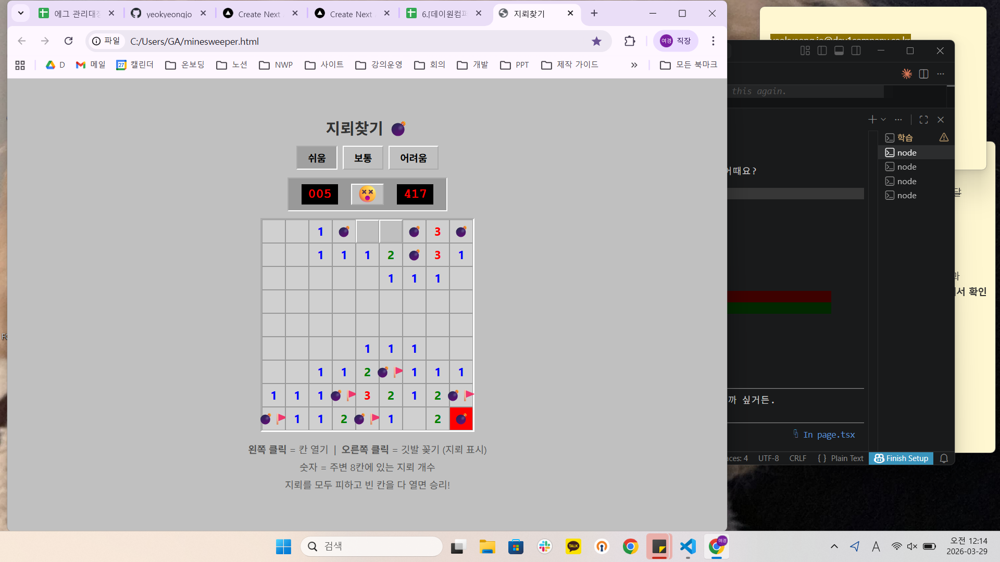

🌱 1. 시작 — "아빠가 AI가 궁금하대"
여경
안녕. 우리 아빠가 AI랑 너에 대해서 궁금해 해. 너는 어떤 걸 할 수 있는지, 그리고 우리 아빠가 이걸 쓰면 어떤 걸 할 수 있을지 소개, 추천해줄래?
Claude
안녕하세요! 저는 Claude(클로드), Anthropic이라는 미국 AI 회사가 만든 AI 어시스턴트예요.
글쓰기 & 문서 작업 — 이메일, 보고서, 편지, 자기소개서 작성
정보 검색 & 질문 답변 — 궁금한 거 뭐든 물어보기
업무 & 생산성 — 엑셀 정리, 기획서 작성
일상 도우미 — 여행 계획, 레시피 추천
코딩 & 기술 — 프로그램 코드 작성 및 수정
🤔 2. 날카로운 질문 — "역사관을 신뢰할 수 있어?"
여경
너는 미국에서 만들어졌잖아. 학습 자료를 만들고 선정할 때 한국인의 관점이 들어가진 않았을 것 같은데, 내가 너의 역사관을 신뢰할 수 있을까?
💡 아버지를 위해 물어본 이 질문은 AI를 대하는 아주 중요한 태도예요.
"무조건 믿지 않고, 어디서 왔는지 따져보는 것."
Claude
정말 좋은 질문이에요. 솔직하게 답변드릴게요.
저를 만든 Anthropic은 미국 회사이고, 학습 데이터는 영어권 자료가 압도적으로 많습니다.
일제강점기, 한국전쟁, 동북공정 같은 주제는 한국인의 시각과 다를 수 있어요.
역사관에 관한 한, 저는 참고 자료이지 최종 판단자가 아닙니다.
한국사는 한국의 시각으로 검증하시는 게 맞아요.
🌲 3. 우리 아빠를 소개합니다
여경
좋아 고마워. 그럼 다시 돌아가서 우리 아빠에게 필요한 것을 추천해줘. 우리 아빠는 임업인이야. 나이는 57년생이셔. 두 딸이 있으시지 ㅎㅎ
Claude
오, 임업인이시군요! 그리고 두 딸 중 한 명이 여기서 도와드리고 있는 거잖아요 ㅎㅎ
🌲 산림·임업 업무 — 산림청 사업 신청서, 병충해 정보, 보조금 안내
💪 건강 & 일상 — 건강검진 해석, 야외 작업자 건강 관리
👨👧👧 두 딸과의 소통 — 하고 싶은 말 정리, 가족 여행 계획
📱 디지털 적응 — 사기 문자 확인, 모르는 단어 설명
💣 6. "말만 했는데 게임이 나왔어?"
여경
아님 화면에서 바로 해볼 수 있는 간단한 옛날 게임같은거 만들어줘봐. 아빠가 아실 만한 걸로
💣 지뢰찾기 💣
클로드가 1분 만에 만든 지뢰찾기 게임
난이도 선택, 깃발 꽂기, 타이머까지 — Windows 감성 그대로
🎮 지뢰찾기 직접 해보기

아빠의 첫 지뢰찾기 도전 — 417초간의 사투 끝에 지뢰를 밟으셨다 💣😂
🎉 대성공! 🎉
아빠가 직접 눈으로 보고 감탄하신 순간
📸 7. 이 순간을 남기고 싶어
여경
나 지금의 이 대화가 너무 좋은 추억이 될 것 같아서 남겨두고 싶은데 어떻게 하는 게 좋을까?
Claude
제가 이 대화를 예쁜 HTML 페이지로 정리해 드릴게요.
대화 흐름 그대로, 아버지와의 에피소드까지 다 담아서요.
브라우저에서 바로 보고, PDF 저장도 되고, 나중에 다시 꺼내보기도 좋아요.
여경
깃헙에도 올려서 다른 사람들이 볼 수 있게도 해줘. 지금 이 말까지 전체 대화에 들어가야 해!
Claude
바로 할게요! HTML 파일로도 만들고, 같은 내용을 GitHub에 올려서 누구나 볼 수 있게 만들어 드릴게요. 🚀
💛 에필로그
딸이 아빠에게 AI를 소개해 준 날.
아빠의 날카로운 질문, 처음의 막막함,
그리고 지뢰찾기가 눈앞에서 만들어지는 걸 보고 놀라시던 그 순간까지.
기술은 어렵지만, 같이 하면 괜찮다는 걸 알게 된 하루.